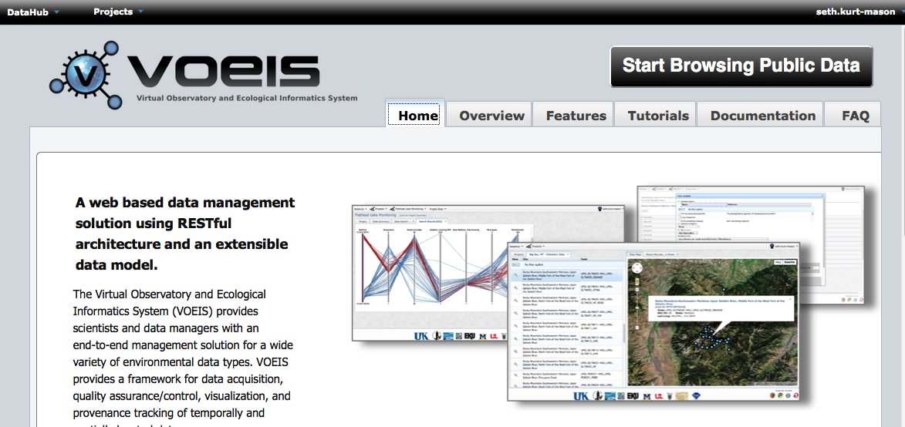

VOEIS provides users with two means for accessing data. You can either choose to use VOEIS as a guest, or as a registered user. As a guest, you will be able to explore a limited number of projects and data sets that PIs have made available to the public.

If you have a VOEIS username and password, click on the “Login” dropdown at the top right corner of the page. Enter your username and password and click “Login”. You will be directed to the Project_Browse page. If you chose to proceed as a guest, simply click “Start Browsing Public Data” button on the Data Hub homepage.
Created with the Personal Edition of HelpNDoc: Easy CHM and documentation editor